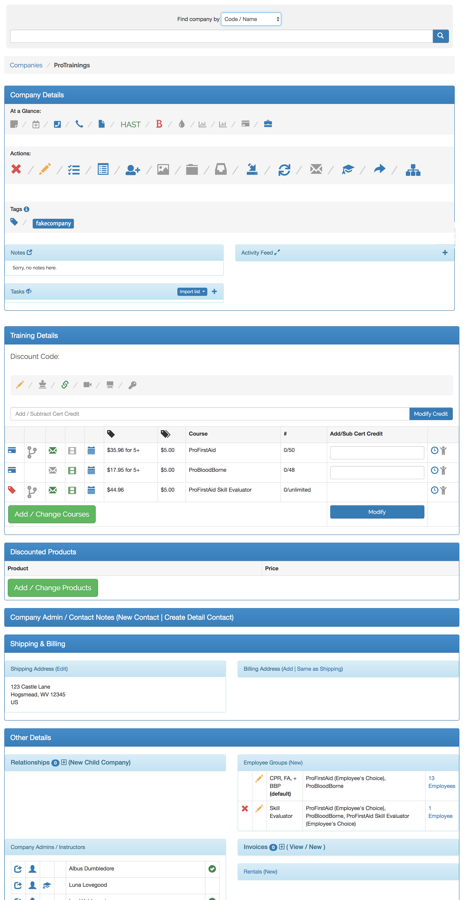

Sales / B2B CRM
- Built a sales back-end screen for finding / assisting corporate accounts.
- Similar to the customer support back-end, all relevant information can be seen at a glance, and common actions can be found in an icon bar at the top of the page.
- Relevant information is shown in a quick, visual way so internal sales reps can easily determine whether the company needs assistance, and followup information can be entered directly on the page.
- Adding course credit, editing course / discount details, modifying addresses, adding contacts, viewing / editing invoices, modifying employee groups, adding new child companies, and viewing company administrator profiles are all just 1 click away.
